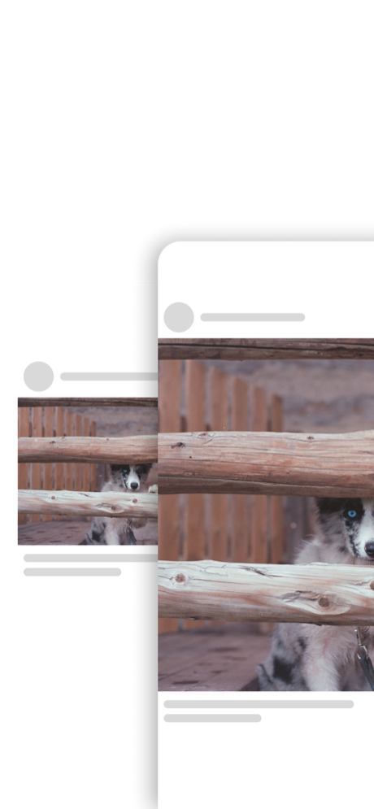
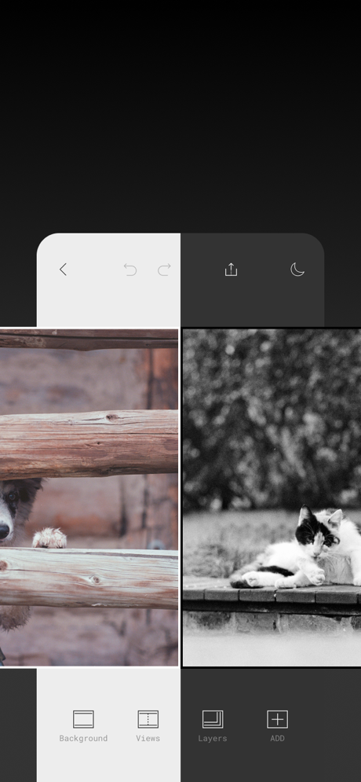
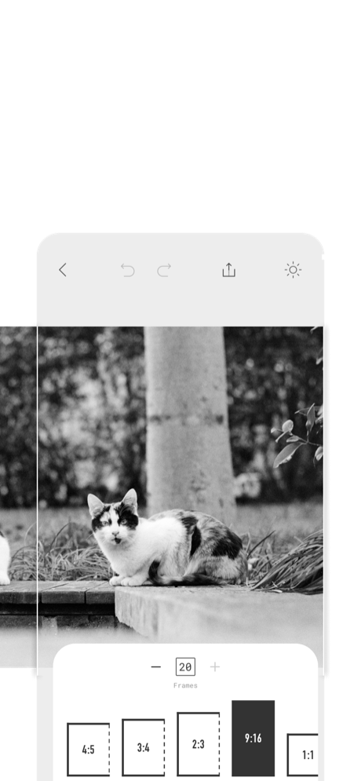
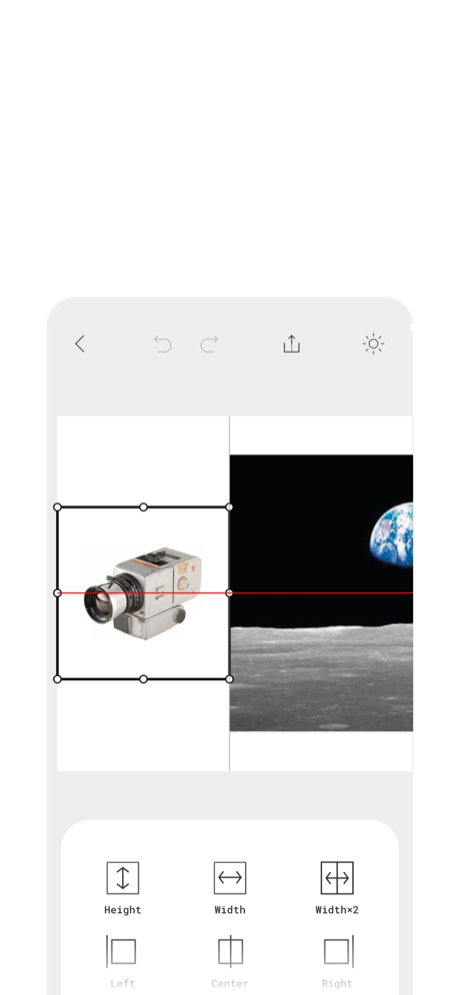
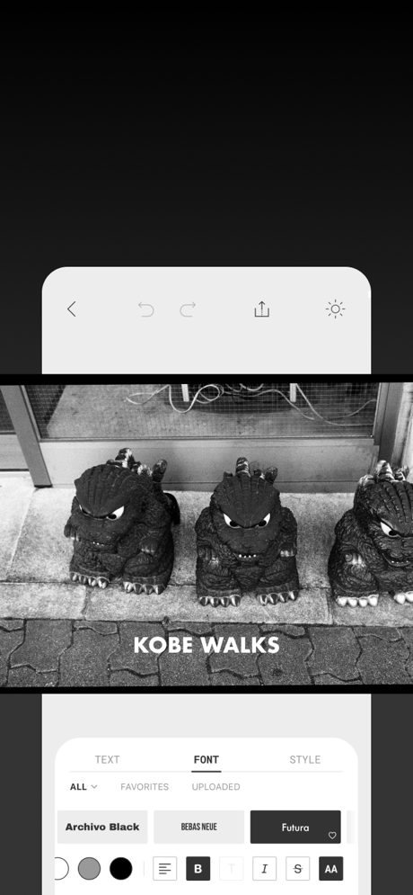
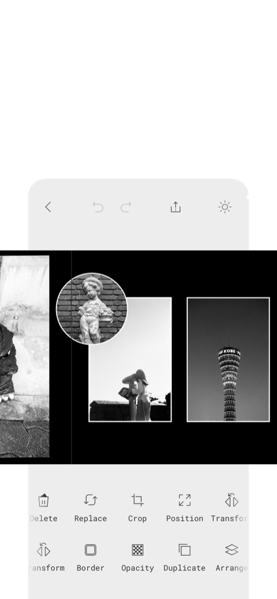

Show your work
Tell your story
A canvas for photos, videos and animated images. Create seamless carousels and collages, then share your work.






Screenshots are from an earlier version; the interface may differ.
Why SView
Export sizes & answers
S/M/L describe the target short edge of each page or output viewport, not the width of the entire panorama.
| Size | Target short edge | 9:16 example (W × H) |
|---|---|---|
| S | 1080 px | 1080 × 1920 |
| M | 2160 px | 2160 × 3840 |
| L | 3240 px | 3240 × 5760 |
Landscape swaps width and height. Extreme ratios are capped at a 12,000px long edge. Video dimensions are even numbers and may be reduced after device compatibility checks; confirm the actual size shown in the app.
Which files and frame rates are exported?
Static Carousel pages use JPEG (80%, 95% or 100%) or HEIC (85%, with JPEG fallback if encoding fails). Pages with visible moving media use MP4 at 24, 30 or 60 fps. Scroll and Slide create one MP4 at a fixed 60 fps. S/M prefer H.264 and L prefers HEVC; the app checks a compatible codec and size on your device. Audio follows unmuted video clips; animated images have no audio.
What is free, and what needs Pro?
Video and animated-image import and editing, Carousel mode, all S/M/L sizes and image formats are free. The free tier includes one project. Scroll/Slide export and content using Pro frames, fonts or ratios require Pro; Pro also includes unlimited projects. Current prices and offers are shown before purchase in the app.
How long can a video be?
There is no product duration cap on the source video. Choose a segment of up to 5 minutes anywhere in it; a dynamic Carousel page is also limited to 5 minutes. Scroll runs for 3.9–30 seconds; Slide uses 1–10 seconds per page. Readability, storage and device resource limits still apply.
Can I import RAW or Live Photos?
RAW compatibility depends on Apple’s decoder, the camera format and the representation supplied by Photos; support for every RAW file is not guaranteed. Live Photos use their still image. HEICS animation is not supported. GIF, APNG and WebP imports are checked for file size, frame count and decoding limits.